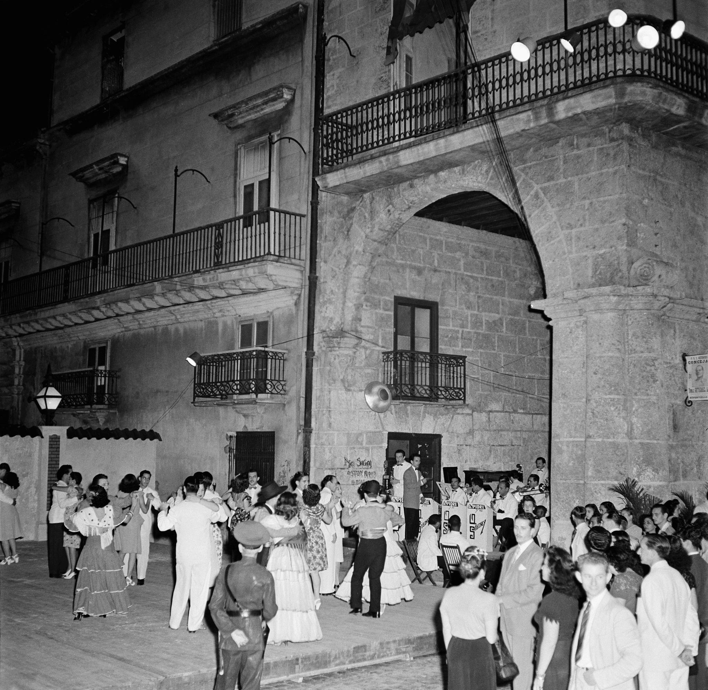
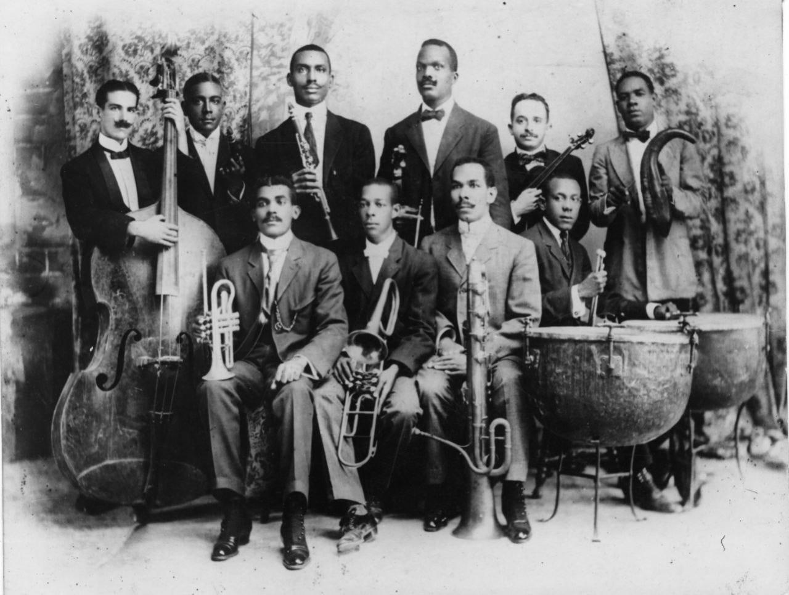
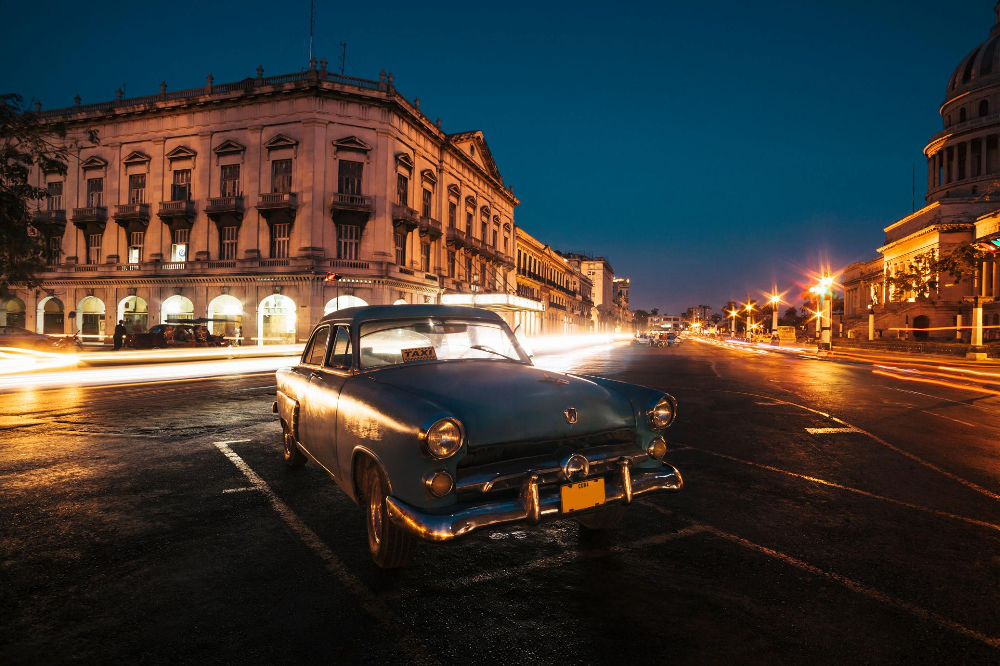
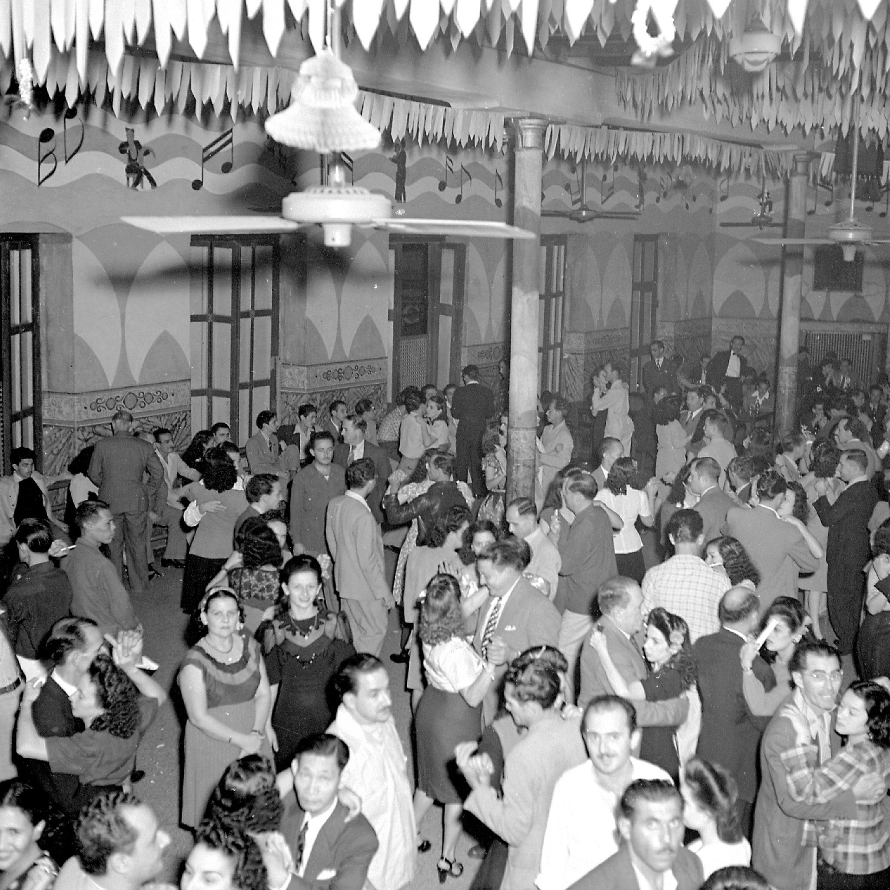
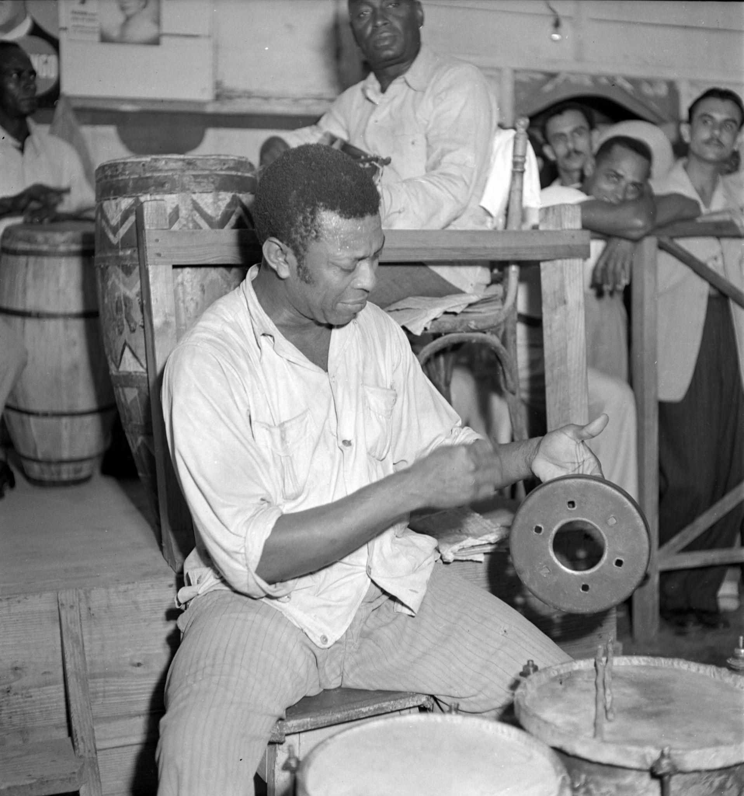
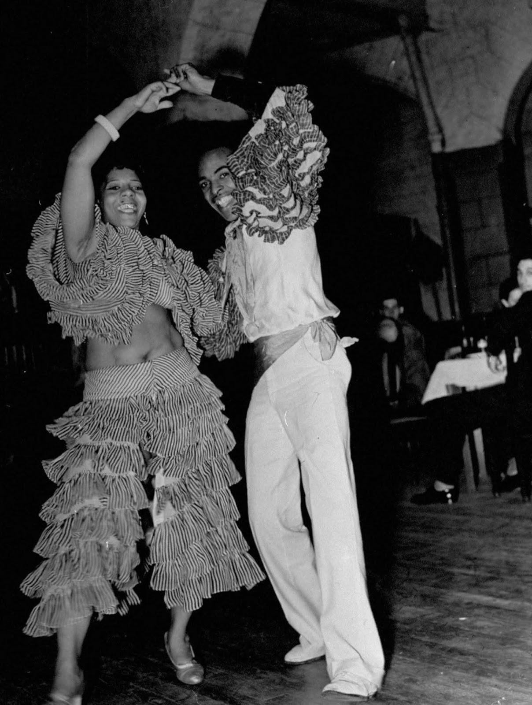

Havana, late 1920s — rhythm you don’t fully control
You hear it before you see anything.
Not melody—rhythm.
It doesn’t travel in straight lines like the music you know from New York City or Paris. It loops, interlocks, overlaps with itself.
By the time you step into the room in Havana, you’re already behind it.
The sound
A small group, but dense:
guitar-like Tres
bongos, played sharp and fast
maracas, filling space between beats
trumpet cutting through, not leading
The rhythm isn’t something you follow.
It’s something you enter, if you can.
The structure (you don’t notice at first)
There’s a pattern underneath—clave—but no one explains it.
Clave holds everything together:
a repeated cycle
tension between expectation and delay
If you miss it, everything feels off.
If you find it, everything locks.
The dancing
Couples move, but not in the way you expect.
Less distance. More conversation.
weight shifts subtly
hips mark rhythm differently than the upper body
pauses matter as much as steps
You try to follow.
You can’t—not immediately.
Because this isn’t choreography imported and learned.
It’s rhythm internalized.
The room
Unlike London or even parts of Shanghai, there’s less separation:
musicians are part of the space, not elevated above it
dancers move close to them, not at a distance
audience and performers blur
No clear boundary between watching and participating.
The mix
You feel layers you can’t fully decode:
African rhythmic structures
Spanish melodic influence
Caribbean environment shaping tempo and movement
This isn’t fusion as an idea.
It’s fusion as a lived condition.
The American presence
At one table, visitors—recognizable.
They came for this:
the looseness
the heat
the sense of something less controlled
But you can see it:
They consume it differently.
They watch more than they join.
The difference
If Harlem is about energy becoming visible,Havana is about:
rhythm that doesn’t need permission
It doesn’t adjust to you.
You adjust to it—or stay outside it.
The feeling
Time changes here.
Not faster. Not slower.
Just… cyclical.
The music doesn’t build toward an ending. It sustains itself.
You stop waiting for resolution.
What lingers
At some point, you stop trying to understand it intellectually.
Your body begins to catch fragments:
a weight shift
a pause
a return to the pattern
Not mastery. Just entry.
The line to carry
As you step back into the street, rhythm still echoing, you realize:
This isn’t music you learn first.It’s music you feel before you’re allowed to understand it.
You’re right to feel the overlap—but Havana and Rio only look similar at a distance. Up close, they run on different engines.
Where they feel alike
Both:
are port cities shaped by African diaspora
center rhythm more than melody
blur performer / audience boundaries
make outsiders feel slightly behind the beat
So your instinct isn’t wrong:
both feel embodied, social, and less “staged” than Europe
But the core difference is structural
🇨🇺 Havana → rhythm as code
built around Clave
everything locks to a repeating pattern
music feels interlocking, precise, almost architectural
You either:
find the pattern → everything makes sense
miss it → everything feels off
👉 Havana = tight system you must enter correctly